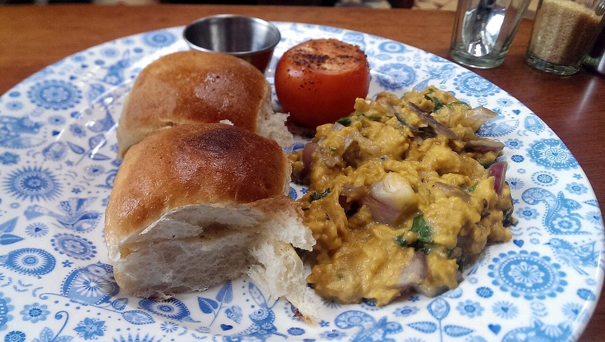

Contains: milk, gluten, egg
Ingredients
Quantities for 2.
- 6 Eggs
- 1, finely chopped Onion
- 1, chopped small Tomato
- 3, chopped Green Chilli
- 1 tsp, grated Ginger
- 1/4 tsp Turmeric
- a handful Coriander Leaves
- 40g Butter
- 2 tbsp Creamoptional
- 4 slices, toasted and buttered Bread
- to taste Salt
Cookware
stovetop
Checked against the ingredient list for ten allergens: milk, egg, fish, crustaceans, tree nuts, peanuts, sesame, mustard, soy and gluten. Brands vary, so read the label on anything new to you.
Before you start
- Akoori should pour slightly rather than hold its shape. Creamy, not raw: bring it to 71°C / 160°F and no further.
- Everything else is cooked before the eggs go anywhere near the pan.
Method
- Soften the onion in the butter, add the ginger, green chilli and turmeric and cook 2 minutes.
- Add the tomato and cook just until it slumps, 2 minutes.
- Beat the eggs with the cream and salt and pour them in over low heat.
- Stir slowly and constantly, taking the pan off the heat every few seconds.Off the heat repeatedly. That is how you get curds this soft.
- Pull it off while still visibly wet, fold in the coriander and pile onto the hot toast.It carries on cooking on the plate. Wet in the pan is right.
Safe temperatures: Egg dishes are done at 71°C / 160°F; a whole egg when the yolk and white are both firm. Reheat leftovers to 74°C / 165°F. FoodSafety.gov
Storage
Eat immediately. Scrambled eggs do not keep or reheat.
Nutrition Medium estimate
Medium protein: 18 g a serving, 18% of the calories
| Per serving276 g | Per 100 g | |
|---|---|---|
| Calories | 418 kcal | 152 kcal |
| Protein | 18.4 g | 7 g |
| Carbohydrate | 9.4 g | 3 g |
| of which sugars | 4.9 g | 2 g |
| Fibre | 1.7 g | 1 g |
| Fat | 34.4 g | 12 g |
| of which saturated | 17.9 g | 6 g |
| of which unsaturated | 13.8 g | 5 g |
Ingredients given to taste count as zero, so the real figures run a little higher. Estimated from raw ingredients using USDA FoodData Central.
More like this: Quick Indian recipes (30 min) · Parsi recipes
Times, yields, allergens and nutrition are guidance. Use your own judgement on doneness and on storing. More in About.